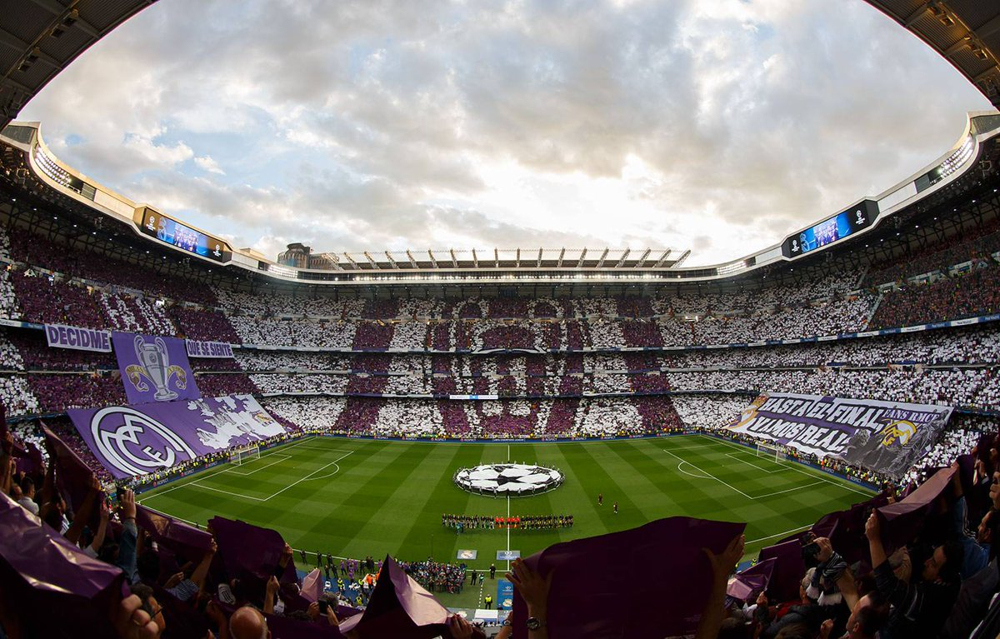

Es el único con las cifras récord de 14 Copas de Europa y 35 Ligas.
El Real Madrid fue fundado en 1902. Julián Palacios es el primer presidente, pero fue Juan Padrós, catalán y de Barcelona, quien formalmente constituyó la institución ese año. El interés en el fútbol crecía tanto en España que el Madrid propuso realizar un torneo en honor al rey Alfonso XIII. La iniciativa se convirtió en la Copa de España (Copa del Rey).
Con un creciente número de socios, el club vio la necesidad de cambiar los terrenos donde jugaba para aumentar el número de espectadores y poder recaudar más dinero. Se desplazó al estadio de O’Donell. Y fue entonces, en 1920, cuando el Rey de España concedió el título de Real al club.
Al inicio de los años 20, el Real Madrid volvió a su rol pionero en el fútbol español. El equipo hizo una serie de viajes fuera de España, con enorme éxito internacional. El Real Madrid es uno de los fundadores del Campeonato Nacional de Liga, en 1928, y jamás ha descendido a Segunda División.
En los años 2014 a 2016, el Real Madrid ganó 2 Champions League en dos finales de infarto contra los rivales de la ciudad, el Atlético de Madrid, con heroicas actuaciones del capitán y leyenda Sergio Ramos. La Décima llegó en 2014 tras 12 años de sequía europea gracias a un gol en el minuto 93 y la Undécima en una tanda de penaltis en 2016. El club además ganó una liga en 2012 que batió todos los records nacionales con 100 puntos y 121 goles.
Tanto las temporadas 2016-2017 como 2018-19 fueron históricas. En 2017 el Real Madrid se convirtió en el primer equipo que repetía título en el formato Champions League y la primera vez desde 1958 que el club obtenía tanto la Liga como la Copa de Europa. Junto al Mundial de Clubes y las Supercopa de España y Europas se convirtió en el mejor año de la historia del Real Madrid como club de fútbol. En la temporada 2018-19, el Real Madrid se convirtió en el primer club deportivo que ganaba tanto la Copa de Europa de fútbol como de baloncesto (la Décima de esta sección) el mismo año. La 13ª Copa de Europa fue también la tercera consecutiva y la cuarta en 5 años. Es una dinastía comparada con ninguna otra del fútbol… excepto el Real Madrid de Bernabéu, Di Stéfano y Gento.
Adaptado de: Primavera blanca
El estadio Santiago Bernabéu tiene una capacidad de 81.000 espectadores. En torno a un 80% del aforo está ocupado por socios del Real Madrid que tienen un abono, mientras que el resto de las entradas se venden al público general. La grada de animación del Real es la Grada FANS RMCF. Nació con el espíritu de unir a los madridistas que quieren animar al equipo incondicionalmente tanto en el Santiago Bernabéu como fuera de él. Quiere recibir a todos los madridistas que creen en una animación sin violencia, política, racismo e intolerancia, abierto a todas las edades y con un solo sentimiento: MADRIDISMO. 2000 madridistas de todos los países, ideologías, razas, creencias y sexos acuden a la Grada FANS vestidos del blanco del Real Madrid para apoyar a su equipo cada partido.
 Adaptado de: Primavera blanca.